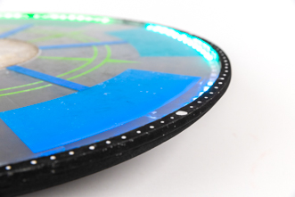

Now

Spring 2026
Research
MuJoCo Quadruped RL
Reinforcement learning for quadruped locomotion using MuJoCo and Raspberry Pi.
Read more →
Fall 2025
Visual Art
Machine Learning IG: ale_drinkz
Machine learning-generated cocktail art posted to an Instagram account.
Read more →
Summer 2025
Engineering
GigaByke Restoration
Full mechanical restoration of an electric bike, including motor and battery systems.
Read more →
Spring 2025
Coursework
MIT 2.14: Feedback Control Systems
Design and analysis of feedback control systems for mechanical applications.
Read more →
Spring 2023
Engineering
Tree Bookshelf
4-foot tree bookshelf designed and built from scratch.
Read more →
Spring 2023
Engineering
UF-WHOA
Balance toy final project for MIT Toy Product Design class, 2.00b in Spring 2023, designed by the six memebrs of Team Polar Bear.
Read more →
older